Hands-on Start Guide
From idea to a working prototype with Renesas 365
This hands-on lab takes you from an idea to a working prototype performing Sensor data transmission over BLE using Renesas 365, the industry’s first intelligent, platform-based development environment. You will load a complete, ready-to-evaluate solution from the Xplore Hub, review the system design, build the software in the browser, then flash, debug and run it on real hardware.
The solution combines an RA6E2 MCU, Bluetooth® Low Energy (BLE) from Renesas combined with a sensor aggregating data and sending them over I²C to the MCU. The sensor selected for this hands-on is the ICM42670 TDK accelerometer.
The boards used in this lab are available from the Renesas website: FPB-RA6E2 Fast Prototyping Board and US159-DA14531EVZ Low-Power Bluetooth Pmod Board. The TDK accelerometer QCIOT-ICM42670POCZ.
Hardware components:
FPB-RA6E2 Fast Prototyping Board (RA6E2 MCU host with on-board J-Link debugger)
US159-DA14531EVZ Low-Power Bluetooth Pmod Board (DA14531 BLE radio)
QCIOT-ICM42670POCZ Pmod Board with ICM42670 3-axis accelerometer
USB cable
The role of each board is summarised in Table 1.
Table 1. Boards and Devices Used
| Function | Board / Device | Role |
|---|---|---|
| MCU host | FPB-RA6E2 Fast Prototyping Board | Runs the FreeRTOS application, acquires and processes sensor data, and controls BLE communication. |
| BLE connectivity | US159-DA14531EVZ Low-Power Bluetooth Pmod Board | Provides the DA14531 BLE radio and communicates with the RA6E2 over UART/GTL. |
| Motion sensing | QCIOT-ICM42670POCZ / ICM42670 module | Provides 3-axis acceleration data over I²C and a data-ready interrupt signal. |
A PC with a Chrome or Edge web browser and internet access
A MyRenesas account to sign in to Renesas 365
Renesas 365 is an intelligent, platform-based development environment that connects system design, hardware and software in one workspace. Everything in the workspace is contextually modelled by the platform, so it understands your design and provides the right information at the point of need.
All Xplore assets are delivered through Renesas 365. The Xplore Hub is your starting point to find complete solutions, reference applications and software building blocks, filtered by application or board.
The following list highlights the platform capabilities used in this lab.
Contextual intelligence: the platform understands your design
Connected domains: system design (ESD), hardware and software, logically linked
Unified workflow: one environment, from idea to working prototype
Software building blocks: built, tested and validated by Renesas; over 150 at launch
Web IDE: edit, compile, debug, download and run from the browser, with nothing to install
Collaborative workspace: share, be shared with, and get notified when things change
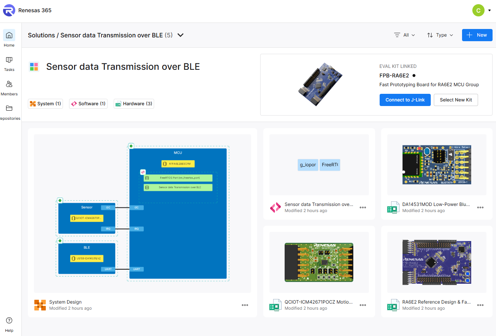
Figure 1. Renesas 365 solution workspace: system design, hardware and software, linked
This section provides a step-by-step procedure to load, build, run and debug the solution project using Renesas 365.
The Sensor Data Transmission over BLE solution project provides a complete reference implementation for capturing accelerometer data and publishing it over BLE. An FPB-RA6E2 board acts as the host and processing platform. The ICM42670 sensor connects over I²C and signals new samples through a data-ready interrupt. A DA14531 module provides Bluetooth Low Energy connectivity through a UART-based Generic Transport Layer interface.
The application separates acquisition and communication into two FreeRTOS threads. The sensor thread owns I²C, converts measurements to milli-g, and applies the publish policy. The BLE thread owns the wireless interface and sends the latest accepted sample as a GATT notification. A second GATT characteristic allows the connected client to request a new sensor output data rate from 12 Hz to 1600 Hz.
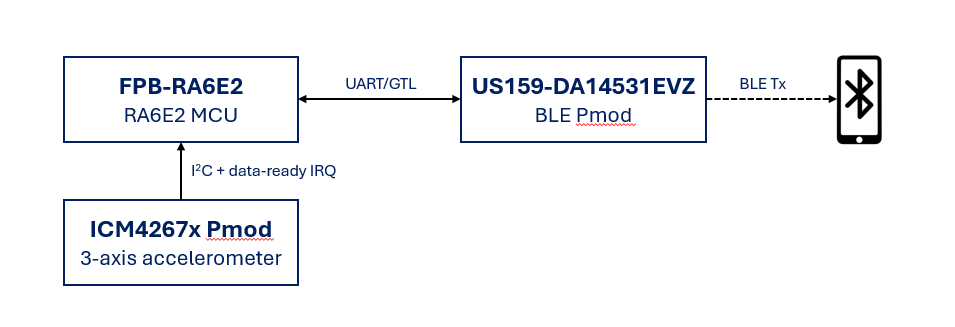
Figure 2. Sensor data transmission over BLE - System block diagram
The software is assembled from the reusable building blocks listed in Table 2.
Table 2. Software Components
| Software Building Block | Purpose |
|---|---|
| Sensor Data Acquisition over I²C | Initializes the ICM42670, handles the data-ready interrupt, reads 3-axis acceleration, and converts samples to milli-g. |
| Sensor Data Processing and Publish Policy | Applies notification-rate limiting, a minimum-change threshold, and optional smoothing before data is handed to BLE. |
| BLE Sensor Data Transmission | Transfers the latest accepted sample to the BLE thread and sends the custom GATT notification when a client is connected and subscribed. |
| BLE Sensor Rate Control | Receives a runtime output-data-rate request from the client, validates the requested value, and defers sensor reconfiguration to the sensor thread. |
| BLE GATT Services | Implements the Sensor Data Notify characteristic, its client configuration descriptor, and the Sensor ODR Write characteristic. |
| Renesas FSP and FreeRTOS Integration | Provides peripheral configuration, middleware integration, thread scheduling, and event-group communication for the reference application. |
Plug the two Pmod boards into the FPB-RA6E2 with the Renesas logo upright:
Top: BLE Pmod (US159-DA14531EVZ, green antenna).
Bottom: TDK accelerometer Pmod (ICM42670, black connector).
Connect the FPB-RA6E2 to your PC with the USB cable. The on-board J-Link is used for flashing and debugging; no external probe is required.
Figure 3. FPB-RA6E2 with BLE Pmod (top) and accelerometer Pmod (bottom)
Open the Xplore Hub in your browser: https://renesas.com/Renesas365/Xplore
Filter by application or board, or search by functionality.
Select the Sensor Transmission over BLE solution and click Experience now.
Sign in with your MyRenesas credentials if prompted. Renesas 365 opens with the full working solution in your workspace.

Figure 4. Xplore Hub: filter by application or board, then click Experience now
Note: This is not a single software building block: it is a complete solution, to experiment with or to base your product on.
From the Renesas 365 home page, open the solution. The workspace has three linked domains:
ESD (Electronic System Design): the system design.
HW: the boards and their reference designs.
SW: the software project, opened in the web IDE.
Note that the workspace is collaborative: you can share it and get notified when things change.
Figure 5. Renesas 365 home: open the solution from your workspace
Open the ESD view. The system is sketched in blocks: compute, sensor and connectivity, each with hardware and software “blankets” (the logical representation of the hardware and software).
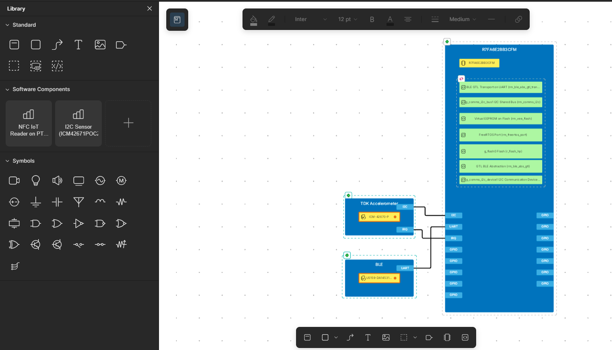
Figure 6. ESD: Block diagram overview of hardware and software building blocks
Click on the MCU blue square to consult the documentation.
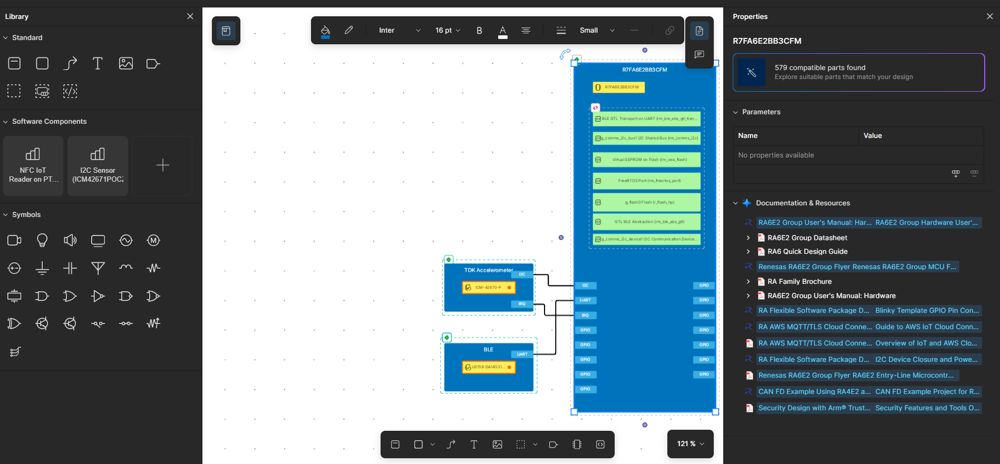
Figure 7. ESD: MCU with the related documentation listed on the right-hand side
Click on the green icon (hardware blanket) to open the hardware project.
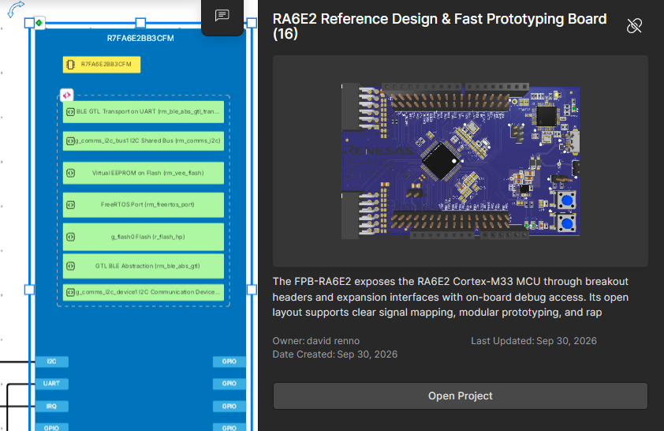
Figure 8. ESD: Click on the Hardware blanket (green icon on the left side of the MCU) to open the hardware project
This allows to consult the related hardware resources: schematics, layout, Bill or Material.
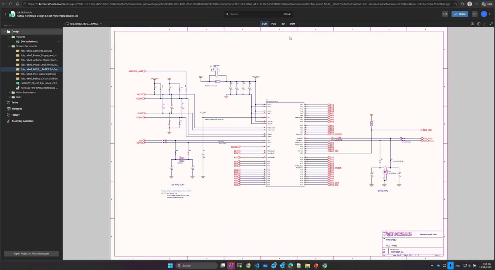
Figure 9. Hardware reference design (schematic) available from the workspace
Back in the ESD, click on the SW blanket (pink icon on the upper left)
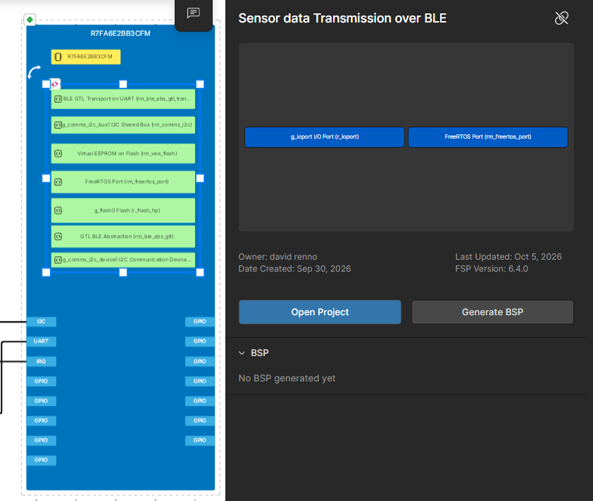
Figure 10. ESD: Click on the pink icon on the left side of the Software blanket to open the Software project
Then click on “Open Project” to open the Web IDE and access the software project directly in the browser: no download, no installation, no toolchain setup needed.
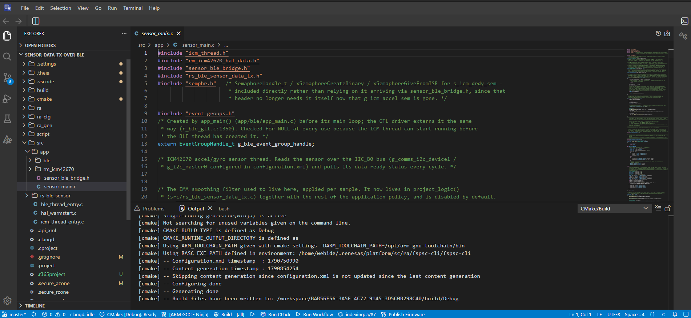
Figure 11. Web IDE: edit, compile, debug, download and run from the browser
Click Build in the bottom bar of the web IDE. The environment is already configured; the compiler and linker run on Renesas servers.
Check the build output in the terminal.
Open Debug from the left bar of the web IDE. Renesas 365 connects to your local hardware and finds the J-Link on the FPB-RA6E2: there is no traditional debug setup.
Start the debug session. The application is flashed and execution stops at main.
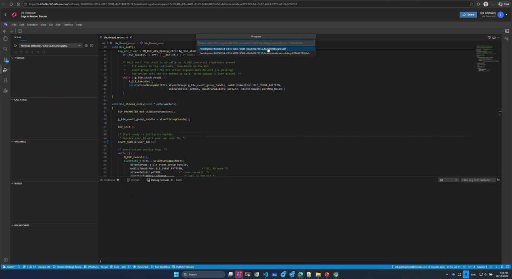
Figure 16. Debug session started from the web IDE
Step through the code, then Run.
Pause and inspect the call stack and the active task. The CPU is mostly idle, which leaves headroom for more features or a lower-cost MCU.
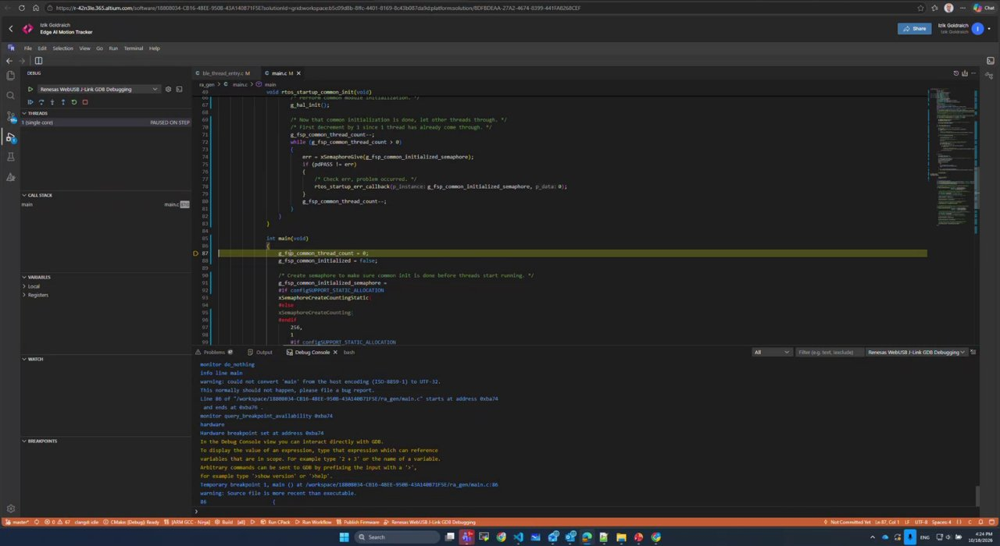
Figure 17. Debug in the browser: break in main, step, run, pause, call stack
At this stage the board is flashed with the FW and the application is running once you power the board or connect it to your PC.
Install Renesas Smartbond application on your smartphone and start it
Open Smartbond on your smartphone and search for ra6e2_da14531_BLE_Sensor
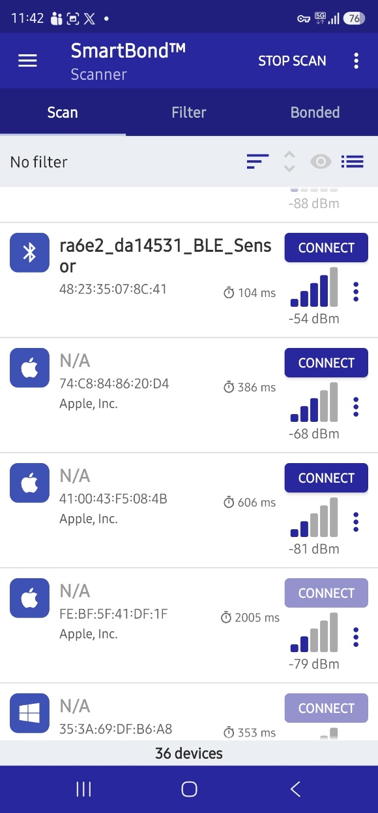
Figure 18. Identify ra6e2 in Smartbond App
To simplify the search, you can use the filter function:
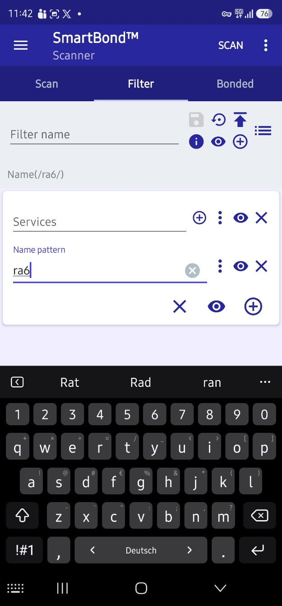
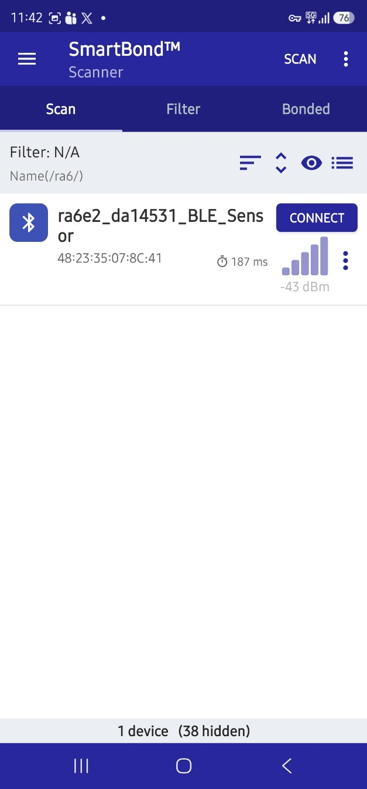
Figure 19. Use the filter function Smartbond App running on mobile
Select the BLE device called ra6e2_da14531_BLE_Sensor
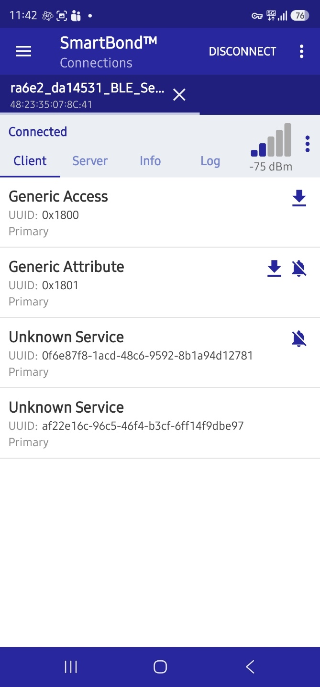
Figure 20. Click on the “Unknown Service” bell icon
Figure 20. Click on the “Unknown Service” bell icon to access the accelerometer values. In this example [c1 00 5d ff 61 27]. Moving slightly the hardware will lead to accelerometer value changes.
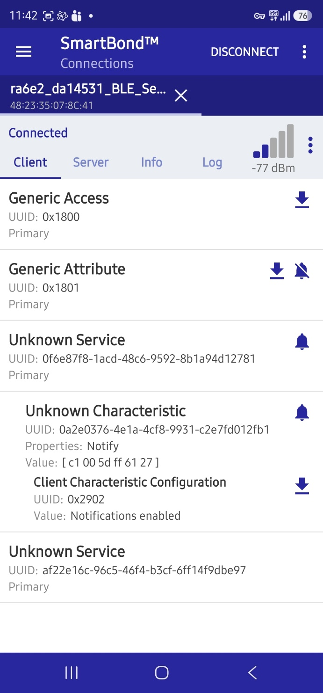
Figure 21. The Value of the accelerometer is available into bracket.
By following this guide, you have gone from concept to a working prototype: system design, hardware selection, reusable software, AI and cloud integration, then build, debug and a running device.
Use the time saved to explore “what if”: another AI model, a different sensor or another part. Suggested next steps:
Visit the Xplore Hub and find the solutions that matter to you.
Register for Renesas 365 and experiment with the platform.
Explore reference applications: load one, build it, run it.
Become an early adopter: talk to the Renesas team and help shape the future of the platform.
This tracking node can be reused across many applications, including:
Table 3. Example Applications
| Market | Segment | Example applications |
|---|---|---|
| Industrial | Industrial Automation | Bluetooth Low Energy Tags for Proximity and Asset Tracking, Smart Asset Tracking Label |
| Industrial | Appliances | Smart Water Leak Sensor Smart Water Shutdown Valve |
| Industrial | Building Automation | Smart locks & access control |
| Consumer Electronics | Wearables | Health Monitor Band, Health Monitoring Medical Patch, Heatstroke Prevention Watch, smart ring; user badge |
| Symptom | Check |
|---|---|
| Board not found when starting Debug | USB cable connected to the FPB-RA6E2; board powered. |
| MCU Board detected in Renesas 365 but Debug fails with “gdbserver exit 0” | The J-Link Firmware on the MCU board need to be updated. The simpler way is to download and install J-Link WinUSB Switcher Lite and configure the board in WinUSB mode as described in this guide. |
| No events detected | Pmods fully seated, logo upright: BLE on top, accelerometer below. |
Technical Updates/Technical News
The latest information can be downloaded from the Renesas Electronics website.
Website and Support
Renesas Electronics Website – https://www.renesas.com/
Inquiries – https://www.renesas.com/contact/
| Revision | Date | Description |
|---|---|---|
| 1.00 | Oct 26, 2026 | Initial release. |